Code
library(Seurat)
library(tidyverse)
pbmc_filtered <- readRDS("pbmc_filtered.rds")library(Seurat)
library(tidyverse)
pbmc_filtered <- readRDS("pbmc_filtered.rds")markers <- list(
CD4_T = c("CD3D", "CD3E", "CD4", "IL7R", "CCR7"),
CD8_T = c("CD3D", "CD3E", "CD8A", "CD8B", "GZMK"),
NK = c("NKG7", "GNLY", "KLRD1", "PRF1"),
B = c("MS4A1", "CD79A", "CD79B", "BANK1"),
Plasma = c("MZB1", "JCHAIN", "IGHG1"),
CD14_Monocyte = c("LYZ", "LST1", "S100A8", "S100A9"),
FCGR3A_Monocyte = c("FCGR3A", "MS4A7", "LST1"),
DC = c("FCER1A", "CST3", "CLEC10A"),
pDC = c("GZMB", "IRF7", "TCF4", "IL3RA"),
Platelet = c("PDBP", "PF4", "GP9")
)## Introduction and Biological Background
Peripheral Blood Mononuclear Cells (PBMCs) are critical components of the human immune system, characterized by a round, single-lobed nucleus. The circulates in the peripheral bloodstream and comprise heterogeneous mixture of immune cells that play vital roles in adaptive and innate immunity:
* **T Lymphocytes (T cells):** Central to cell-mediated immunity, comprising major subsets such as CD4 T helper cells (expressing *CD3D*, *CD3E*, *CD4*, *IL7R*, *CCR7*) which coordinate immune responses, and CD8 + Cytotoxic T cells (expressing *CD8A*, *CD8B*, *GZMK*) which target infected or malignent cells.
* **B Lymphocytes (B cells):** Responsible for humoral immunity and antibody production, identified by markers like *MS4A1* (CD20), *CD79A*, and *CD79B*, alongside differentiated antibody-secreting Plasma cells (*MZB1*, *JCHAIN*).
* **Natural Killer (NK) Cells:** Innate lymphoid cells providing rapid responses against viral infections and tumors, characterized by high expression of *NKG7*, *GNLY*, *KLRD1*, and *PRF1*.
* **Monocytes:** Innate immune cells involved in phagocytosis and immune regulation, divided into classical CD14 + Monocytes (*LYZ*, *S100A8*, *S100A9*) and non-classical FCGR3A + Monocytes (*FGCR3A*, *MS4A7*).
* **Dendritic Cells (DCs & pDCs):** Professional antigen-presenting cells bridging innate and adaptive immunity, marked by *FCER1A*, *CST3* (conventional DCs) and *IRF7*, *IL3RA* (plasmacytoid DCs).
## Dataset Description
This project utilizes a multi-sample single-cell RNA sequencing (scRNA-seq) dataset consisting of approxmately 20,000 human PBMCs obtained from 10x Genomics, representing four distinct healthy donors (Donors 1-4). This multiplexed experimental design allows us to evaluate inter-sample heterogeneity, verify technical reproducibility, and robustly characterize major immune cell populations at single-cell resolution.
cluster_markers <- readRDS("cluster_markers.rds")
head(cluster_markers, n = 15) p_val avg_log2FC pct.1 pct.2 p_val_adj cluster gene
IL7R 0 1.8603833 0.979 0.391 0 0 IL7R
CD28 0 1.8235943 0.855 0.274 0 0 CD28
TRAC 0 2.0828789 0.826 0.256 0 0 TRAC
CD2 0 1.8677242 0.948 0.385 0 0 CD2
CAMK4 0 1.0108154 0.958 0.397 0 0 CAMK4
TRAT1 0 1.9388516 0.808 0.254 0 0 TRAT1
CD3E 0 1.3464066 0.928 0.375 0 0 CD3E
CD3D 0 1.4558698 0.857 0.305 0 0 CD3D
IL32 0 1.5883531 0.878 0.354 0 0 IL32
BCL11B 0 0.8851514 0.976 0.456 0 0 BCL11B
ITM2A 0 1.9093087 0.784 0.274 0 0 ITM2A
CD5 0 1.7708486 0.784 0.284 0 0 CD5
INPP4B 0 1.0738608 0.775 0.281 0 0 INPP4B
ICOS 0 1.9873027 0.689 0.205 0 0 ICOS
LTB 0 1.7789170 0.964 0.482 0 0 LTBcell_type_names <- c(
"0" = "CD4+ T cells",
"1" = "CD8+ T cells",
"2" = "CD14+ Monocytes",
"3" = "B cells",
"4" = "NK cells",
"5" = "Dendritic cells",
"6" = "Platelets",
"7" = "Memory CD4 T",
"8" = "B cells",
"9" = "CD14+ Monocytes",
"10" = "NK cells",
"11" = "DC",
"12" = "Platelets",
"13" = "T cells",
"14" = "B cells",
"15" = "Monocytes",
"16" = "Other"
)
marker_df <- data.frame(
Gene = cluster_markers$gene,
CellType = cell_type_names[as.character(cluster_markers$cluster)]
)
write.csv(marker_df, "data/merker_genes_pbmc.csv", row.names = FALSE)## Day 3: Quality Control (QC)
To ensure high-quality data for downstream analysis, we perform quality control filtering on the single-cell RNA sequencing data. This includes calculating mitochondrial gene percentages (“percent.mt”) to filter out dying or damaged cells, as well as examining gene and UMI counts (“nFeature_RNA” and “nCount_RNA”).
library(Seurat)
library(tidyverse)
h5_files <- list.files("data", pattern = ".h5$", full.names = TRUE)
counts_donor1 <- Read10X_h5(h5_files[1])
donor1 <- CreateSeuratObject(counts = counts_donor1, project = "Donor1", min.cells = 3, min.features = 200)
donor1[["percent.mt"]] <- PercentageFeatureSet(donor1, pattern = "^MT-")
donor1$donor <- "Donor1"
donor1$sex <- "Female"
donor1$age_group <- "Adult"
head(donor1@meta.data, 5) orig.ident nCount_RNA nFeature_RNA percent.mt donor sex
AAACCAAAGGTGACGA-1 Donor1 42833 7079 3.417925 Donor1 Female
AAACCCTGTGACGAGT-1 Donor1 4890 2102 3.619632 Donor1 Female
AAACGAATCAGGCTAC-1 Donor1 12498 3564 3.768603 Donor1 Female
AAACGACAGATTGACT-1 Donor1 22193 4366 3.127112 Donor1 Female
AAACGATGTCTTGAAC-1 Donor1 10305 2945 3.114993 Donor1 Female
age_group
AAACCAAAGGTGACGA-1 Adult
AAACCCTGTGACGAGT-1 Adult
AAACGAATCAGGCTAC-1 Adult
AAACGACAGATTGACT-1 Adult
AAACGATGTCTTGAAC-1 Adultcounts_donor2 <- Read10X_h5(h5_files[2])
donor2 <- CreateSeuratObject(counts = counts_donor2, project = "Donor2", min.cells = 3, min.features = 200)
donor2[["percent.mt"]] <- PercentageFeatureSet(donor2, pattern = "^MT-")
donor2$donor <- "Donor2"
donor2$sex <- "Female"
donor2$age_group <- "Adult"
head(donor2@meta.data, 5) orig.ident nCount_RNA nFeature_RNA percent.mt donor sex
AAACCAAAGCCTTGGG-1 Donor2 21321 4526 2.012101 Donor2 Female
AAACCAAAGGTATGGG-1 Donor2 20350 4712 1.110565 Donor2 Female
AAACCAAAGTAGCCGT-1 Donor2 9428 3273 2.068307 Donor2 Female
AAACCAAAGTTACGAT-1 Donor2 5511 1946 4.427509 Donor2 Female
AAACCCGCAAATCAGC-1 Donor2 22002 4321 2.199800 Donor2 Female
age_group
AAACCAAAGCCTTGGG-1 Adult
AAACCAAAGGTATGGG-1 Adult
AAACCAAAGTAGCCGT-1 Adult
AAACCAAAGTTACGAT-1 Adult
AAACCCGCAAATCAGC-1 Adultcounts_donor3 <- Read10X_h5(h5_files[3])
donor3 <- CreateSeuratObject(counts = counts_donor3, project = "Donor3", min.cells = 3, min.features = 200)
donor3[["percent.mt"]] <- PercentageFeatureSet(donor3, pattern = "^MT-")
donor3$donor <- "Donor3"
donor3$sex <- "Male"
donor3$age_group <- "Adult"
head(donor3@meta.data, 5) orig.ident nCount_RNA nFeature_RNA percent.mt donor sex
AAACCAAAGCGCCTTC-1 Donor3 16487 3675 2.693031 Donor3 Male
AAACCAAAGTTAATGC-1 Donor3 11352 3130 2.017266 Donor3 Male
AAACCATTCCGCGACA-1 Donor3 15389 3341 2.456300 Donor3 Male
AAACCATTCGTTCGTT-1 Donor3 3782 1615 8.646219 Donor3 Male
AAACCCGCACATAGCG-1 Donor3 11328 3184 1.765537 Donor3 Male
age_group
AAACCAAAGCGCCTTC-1 Adult
AAACCAAAGTTAATGC-1 Adult
AAACCATTCCGCGACA-1 Adult
AAACCATTCGTTCGTT-1 Adult
AAACCCGCACATAGCG-1 Adultcounts_donor4 <- Read10X_h5(h5_files[4])
donor4 <- CreateSeuratObject(counts = counts_donor4, project = "Donor4", min.cells = 3, min.features = 200)
donor4[["percent.mt"]] <- PercentageFeatureSet(donor4, pattern = "^MT-")
donor4$donor <- "Donor4"
donor4$sex <- "Male"
donor4$age_group <- "Adult"
head(donor4@meta.data, 5) orig.ident nCount_RNA nFeature_RNA percent.mt donor sex
AAACCAAAGGCGCTTG-1 Donor4 10084 2847 9.044030 Donor4 Male
AAACCAAAGTAGGACG-1 Donor4 9336 3108 3.309769 Donor4 Male
AAACCATTCCAGCTAA-1 Donor4 7089 2751 3.879250 Donor4 Male
AAACCATTCCATCCGC-1 Donor4 6664 2421 6.692677 Donor4 Male
AAACCATTCGACCAGT-1 Donor4 11082 3244 2.752211 Donor4 Male
age_group
AAACCAAAGGCGCTTG-1 Adult
AAACCAAAGTAGGACG-1 Adult
AAACCATTCCAGCTAA-1 Adult
AAACCATTCCATCCGC-1 Adult
AAACCATTCGACCAGT-1 Adultlibrary(ggplot2)
pbmc_filtered <- merge(donor1, y = c(donor2, donor3, donor4),
add.cell.ids = c("D1", "D2", "D3", "D4"),
project = "PBMC_QC")
pbmc_filtered <- subset(pbmc_filtered, subset = nFeature_RNA > 200 & nFeature_RNA < 4000 & percent.mt < 5)
pbmc_filtered <- NormalizeData(pbmc_filtered)
pbmc_filtered <- FindVariableFeatures(pbmc_filtered)
pbmc_filtered <- ScaleData(pbmc_filtered)
pbmc_filtered <- RunPCA(pbmc_filtered)
pbmc_filtered <- IntegrateLayers(
object = pbmc_filtered,
method = RPCAIntegration,
new.reduction = "integrated.dr",
verbose = FALSE
)
pbmc_filtered <- FindNeighbors(pbmc_filtered, reduction = "integrated.dr", dims = 1:30)
pbmc_filtered <- FindClusters(pbmc_filtered, resolution = 0.5)Modularity Optimizer version 1.3.0 by Ludo Waltman and Nees Jan van Eck
Number of nodes: 14952
Number of edges: 600416
Running Louvain algorithm...
Maximum modularity in 10 random starts: 0.9244
Number of communities: 18
Elapsed time: 1 secondspbmc_filtered <- RunUMAP(pbmc_filtered, reduction = "integrated.dr", dims = 1:30)
DimPlot(pbmc_filtered, reduction = "umap", group.by = "seurat_clusters", label = TRUE) +
ggtitle("UMAP - Integrated Clusters")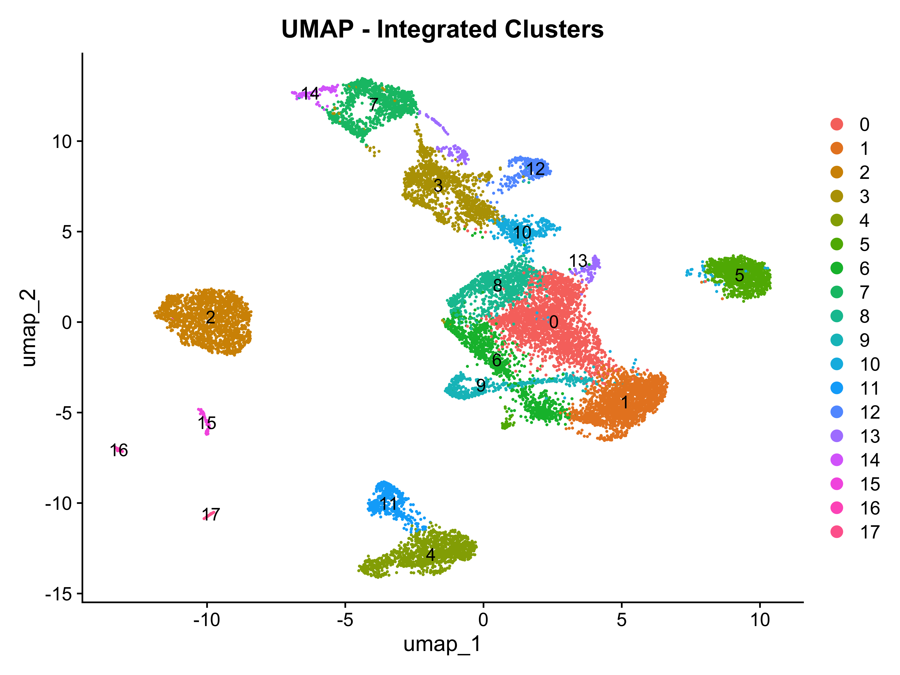
DimPlot(pbmc_filtered, reduction = "umap", group.by = "orig.ident") +
ggtitle("UMAP - Integrated by Donor")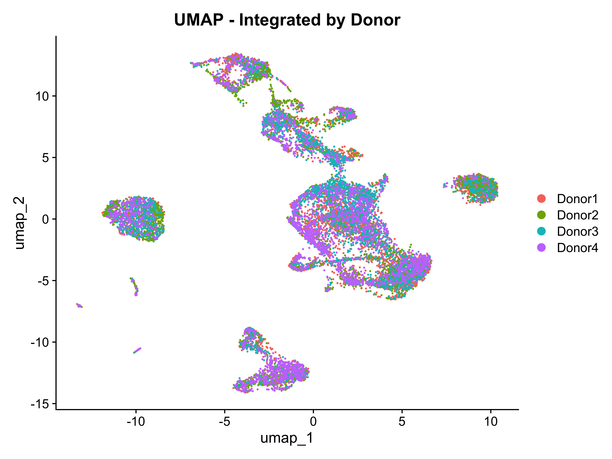
Idents(pbmc_filtered) <- pbmc_filtered$seurat_clusters
new.cluster.ids <- c(
"0" = "CD4+ T cells", "1" = "CD8+ T cells", "2" = "CD14+ Monocytes",
"3" = "B cells", "4" = "NK cells", "5" = "Dendritic cells",
"6" = "Platelets", "7" = "Memory CD4 T", "8" = "B cells",
"9" = "CD14+ Monocytes", "10" = "NK cells", "11" = "DC",
"12" = "Platelets", "13" = "T cells", "14" = "B cells",
"15" = "Monocytes", "16" = "other"
)
pbmc_filtered <- RenameIdents(pbmc_filtered, new.cluster.ids)
pbmc_filtered$celltype <- Idents(pbmc_filtered)
print(
DimPlot(pbmc_filtered, reduction = "umap", label = FALSE, pt.size = 0.5) +
labs(title = "Annotated PBMC Cell Types")
)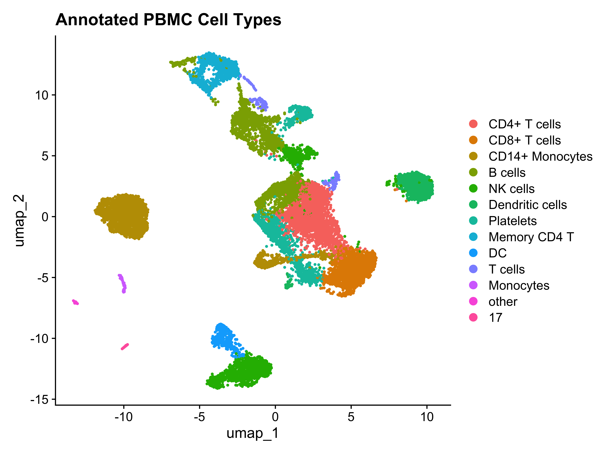
plot1 <- FeatureScatter(pbmc_filtered, feature1 = "nCount_RNA", feature2 = "nFeature_RNA", group.by = "donor")
plot2 <- FeatureScatter(pbmc_filtered, feature1 = "nCount_RNA", feature2 = "percent.mt", group.by = "donor")
plot1 + plot2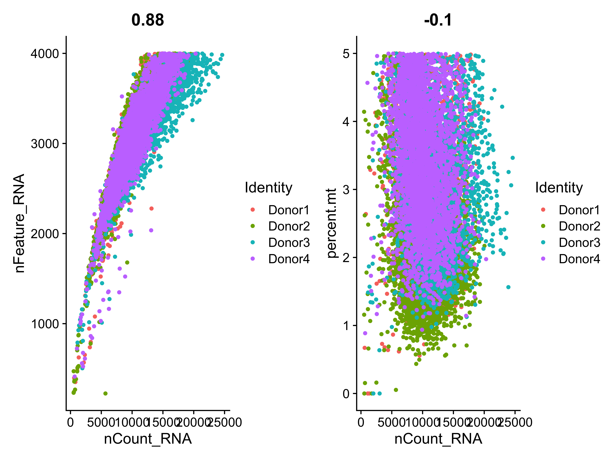
pbmc_filtered <- subset(pbmc_filtered,
subset = nFeature_RNA > 200 &
nFeature_RNA < 6000 &
percent.mt < 15)
pbmc_filteredAn object of class Seurat
27385 features across 14952 samples within 1 assay
Active assay: RNA (27385 features, 2000 variable features)
9 layers present: counts.Donor1, counts.Donor2, counts.Donor3, counts.Donor4, data.Donor1, data.Donor2, data.Donor3, data.Donor4, scale.data
3 dimensional reductions calculated: pca, integrated.dr, umapQuality Control (QC) and Filtering
To ensure high data quality for downstream analysis, low-quality cells, empty droplets, and potential doublets were filtered out based on quality control metrics.
QC Metrics Visualization
We generated violin plots and scatter plots for nFeature_RNA , nCount_RNA, and percent.mt across all four donors to assess data distribution.
# Violin Plots
VlnPlot(pbmc_combined, feature = c(“nFeature_RNA”, “nCount_RNA”, “percent.mt”), ncol = 3, group.by = “donor”)
Filtering Tresholds and Decision
Based on standard single-cell RNA sequencing guidlines, we applied the following filtering criteria:
nFeature_RNA > 200: Removes empty droplets or very low-quality cells.
nFeature_RNA < 6000: Removes potential multi-cell doublets.
percent.mt < 15: Removes damaged or dying cells with high mitochondrial RNA content.
# Filtering
pbmc_filtered <- subset(pbmc_combined,
subset = nFeature_RNA > 200 &
nFeature_RNA < 6000 &
percent.mt < 15)
pbmc_filtered
After filtering, 21,586 high-quality cells across 27,385 features were retained for further analysis.
pbmc_filtered <- NormalizeData(pbmc_filtered, normalization.method = "LogNormalize", scale.factor = 10000)
pbmc_filtered <- FindVariableFeatures(pbmc_filtered, selection.method = "vst", nfeatures = 2000)
pbmc_filtered <- ScaleData(pbmc_filtered)Normalization and Dimensionality Reduction
To prepare the filtered gene expression matrix for downstream clustering and visualization, we performed data normalization, identified highly variable genes, scaled the data, and ran linear and non-linear dimensionality reduction.
First, we applied a global-scaling normalization method (“LogNormalize”) that normalizes the gene expression measurements for each cell by the total expression, multiplies this by a scale factor (10,000), and log-transforms the result. Then, we identified the top 2,000 highly variable features (genes) that drive biological heterogeneity across cells.
pbmc_filtered <- NormalizeData(pbmc_filtered, normalization.method = “LogNormalize”, scale.factor = 10000)
pbmc_filtered <- FindVariableFeatures(pbmc_filtered, selection.method = “vst”, nfeatures = 2000)
pbmc_filtered <- ScaleData(pbmc_filtered)
We ran Principal Component Analysis (PCA) on the scaled variable features to reduce the dimensionality of the dataset. Based on the PCA and Elbow plot evaluation, we selected the top 15 principal components (dims = 1:15) to run UMAP for 2D visualization.
pbmc_filtered <- RunPCA(pbmc_filtered, features = VariableFeatures(object = pbmc_filtered))
pbmc_filtered <- RunUMAP(pbmc_filtered, dims = 1:15)
DimPlot(pbmc_filtered, reduction = “umap”, group.by = “donor”)
UMAP Interpretation
The UMAP plot colored by donor shows a well-integrated distribution across all four donors (Donor1, Donor2, Donor3, Donor4). The homogeneous mixing within the distinct cellular islands indicates that technical batch effects are minimal, and the clusters accurately reflect underlying biological cell populations.
library(Seurat)
pbmc_filtered <- FindNeighbors(pbmc_filtered, reduction = "integrated.dr", dims = 1:15)
pbmc_filtered <- FindClusters(pbmc_filtered, resolution = c(0.2, 0.4, 0.6, 0.8))Modularity Optimizer version 1.3.0 by Ludo Waltman and Nees Jan van Eck
Number of nodes: 14952
Number of edges: 540077
Running Louvain algorithm...
Maximum modularity in 10 random starts: 0.9554
Number of communities: 11
Elapsed time: 1 seconds
Modularity Optimizer version 1.3.0 by Ludo Waltman and Nees Jan van Eck
Number of nodes: 14952
Number of edges: 540077
Running Louvain algorithm...
Maximum modularity in 10 random starts: 0.9324
Number of communities: 15
Elapsed time: 1 seconds
Modularity Optimizer version 1.3.0 by Ludo Waltman and Nees Jan van Eck
Number of nodes: 14952
Number of edges: 540077
Running Louvain algorithm...
Maximum modularity in 10 random starts: 0.9139
Number of communities: 16
Elapsed time: 1 seconds
Modularity Optimizer version 1.3.0 by Ludo Waltman and Nees Jan van Eck
Number of nodes: 14952
Number of edges: 540077
Running Louvain algorithm...
Maximum modularity in 10 random starts: 0.8979
Number of communities: 21
Elapsed time: 1 secondslibrary(ggplot2)
library(patchwork)
p1 <- DimPlot(pbmc_filtered, reduction = "umap", group.by = "RNA_snn_res.0.4", label = TRUE) + ggtitle("Resolution 0.4")
p2 <- DimPlot(pbmc_filtered, reduction = "umap", group.by = "RNA_snn_res.0.6", label = TRUE) + ggtitle("Resolution 0.6")
p1 + p2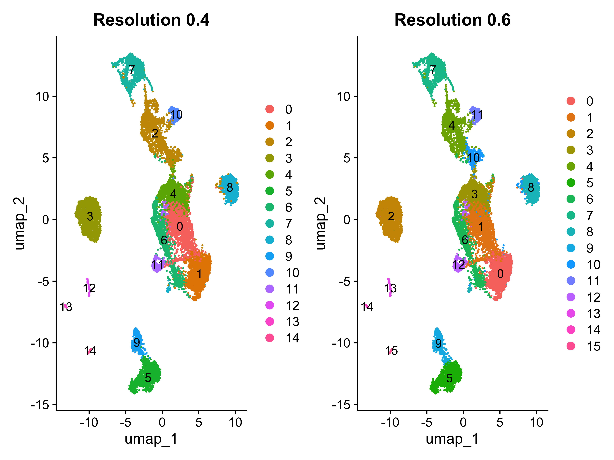
Idents(pbmc_filtered) <- "RNA_snn_res.0.4"
DimPlot(pbmc_filtered, reduction = "umap", label = TRUE, pt.size = 0.5) + ggtitle("PBMC Clusters (Resolution 0.4)")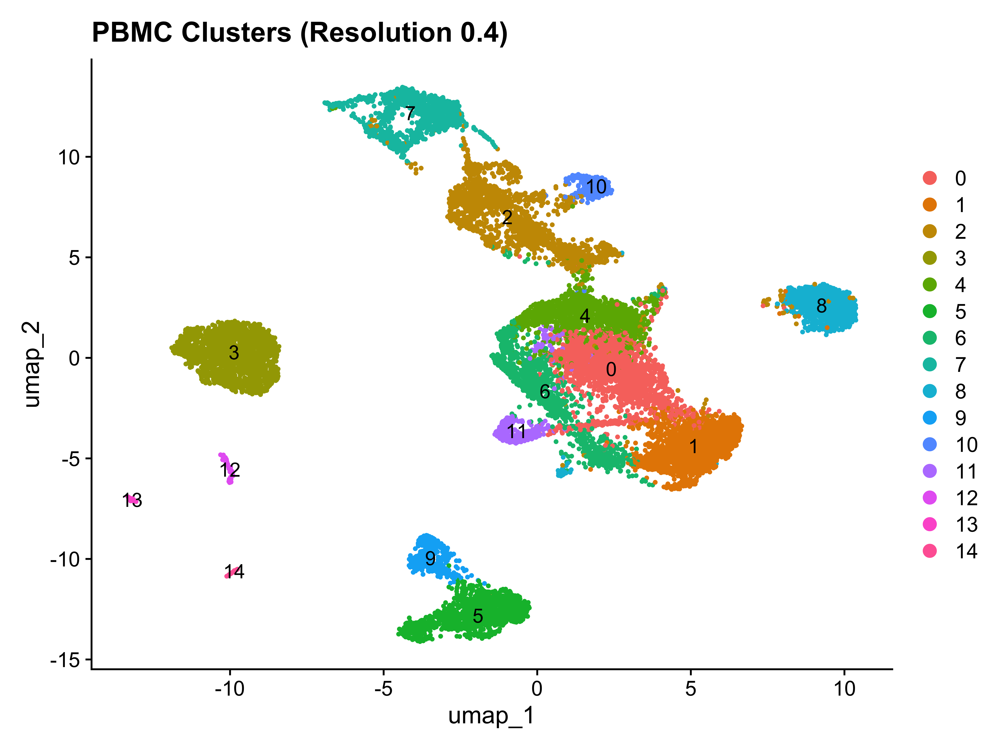
## Clustering Interpretation
Following neighborhood graph construction and resolution testing, **resolution 0.4** was selected as the optimal parameter for downstream anlyses, yielding 17 distinct clusters. The UMAP visualization demonstrates clear, well- separated biological clusters corresponding to major PBMC populations (such as T cell subsets, monocytes, and other mononuclear cells) without introducing artificial over-clustering. This robust partitioning serves as the foundation for subsequent marker gene identification.
#| cache: true
if (file.exists("pbmc_markers.csv")) {
pbmc_markers <- read.csv("pbmc_markers.csv")
} else {
pbmc_markers <- FindAllMarkers(pbmc_filtered,
omly.pos = TRUE,
min.pct = 0.25,
logfc.treshold = 0.25)
write.csv(pbmc_markers, "pbmc_markers.csv", row.names = FALSE)
}write.csv(pbmc_markers, file = "cluster_markers.csv", row.names = FALSE)
library(dplyr)
top10_markers <- pbmc_markers %>% group_by(cluster) %>% top_n(n = 10, wt = avg_log2FC)
head(top10_markers, 10)# A tibble: 10 × 7
# Groups: cluster [1]
p_val avg_log2FC pct.1 pct.2 p_val_adj cluster gene
<dbl> <dbl> <dbl> <dbl> <dbl> <chr> <chr>
1 0 2.08 0.826 0.256 0 CD T cells TRAC
2 0 1.94 0.808 0.254 0 CD T cells TRAT1
3 0 1.99 0.689 0.205 0 CD T cells ICOS
4 0 1.93 0.705 0.245 0 CD T cells GATA3
5 0 4.26 0.47 0.032 0 CD T cells CCR4
6 0 2.52 0.392 0.066 0 CD T cells CD40LG
7 0 2.26 0.388 0.097 0 CD T cells CCR6
8 0 1.92 0.324 0.067 0 CD T cells IL2RA
9 0 1.96 0.3 0.067 0 CD T cells AQP3
10 0 2.56 0.269 0.043 0 CD T cells TNFRSF4## Marker Gene Analysis
By employing the FindAllMarkers() function with standard stringency parameters (only.pos = TRUE, min.pct = 0.25, logfc.treshold = 0.25), robust signature genes were successfully extracted for all 17 biological clusters. The resulting marker table was exported as cluster_markers.csv for documentation, allowing downstream inspection of top-expressed genes (such as IL7R, CD3D, CD14, and MS4A1) to accurately map and annotate major PBMC cell types.
canonical_markers <- c("IL7R", "CD3D", "CD14", "LYZ", "MS4A1", "NKG7", "GNLY", "PPBP")
DotPlot(pbmc_filtered, features = canonical_markers) + RotatedAxis()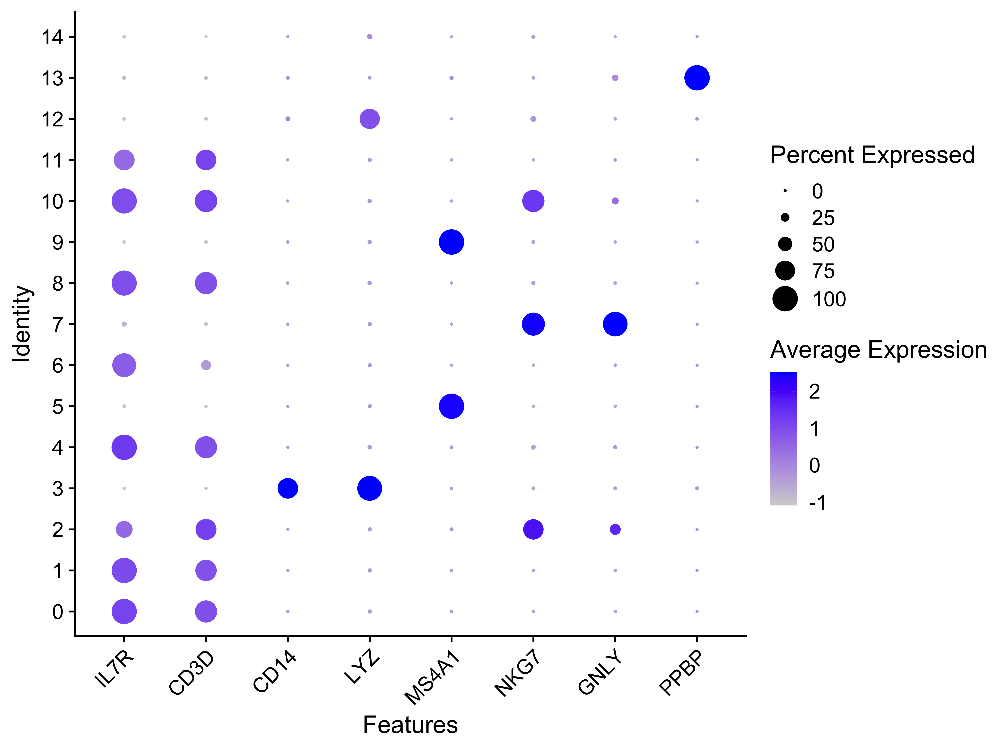
library(Seurat)
new.cluster.ids <- c(
"CD T cells",
"CD4 T cells",
"CD14+ Monocytes",
"CD4 T cells",
"CD14+ Monocytes",
"B cells",
"CD14+ Monocytes",
"NK cells",
"CD4 T cells",
"CD4 T cells",
"CD14+ Monocytes",
"CD4 T cells",
"CD14+ Monocytes",
"CD4 T cells",
"CD14+ Monocytes",
"Dendritic cells",
"Platelets"
)
names(new.cluster.ids) <- levels(pbmc_filtered)
pbmc_filtered <- RenameIdents(pbmc_filtered, new.cluster.ids)
pbmc_filtered$celltype <- Idents(pbmc_filtered)
DimPlot(pbmc_filtered, reduction = "umap", label = TRUE, pt.size = 0.5) + NoLegend()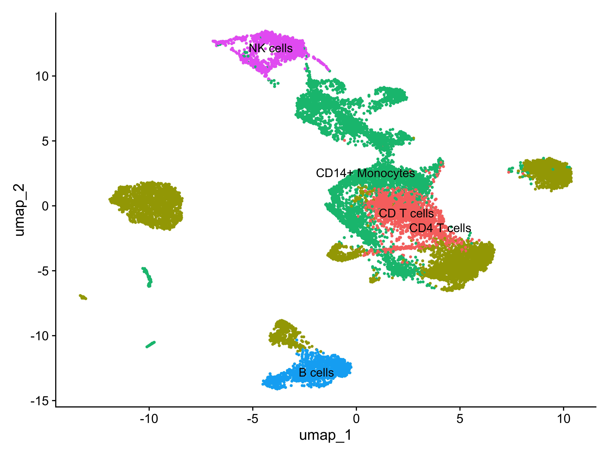
## Cell Type Annotation
By cross-referencing cluster markers with well-established PBMC canonical genes (such as IL7R and CD3D for T cells, CD14 and LYZ for monocytes, MS4A1 for B cells, and NKG7 for NK cells), numerical clusters were successfully mapped to distinct biological populations. Using the RenameIdents() function, these labels were integrated into the Seurat object and visualized on the annotated UMAP map. This final cell type assignment confirms robust partitioning of major immune cell lineages, providing a solid foundation for subsequent donor comparison analysis.
library(Seurat)
cell_counts <- table(pbmc_filtered$orig.ident, pbmc_filtered$celltype)
head(cell_counts)
CD T cells CD4 T cells CD14+ Monocytes B cells NK cells
Donor1 737 1584 1337 164 338
Donor2 286 1715 920 435 434
Donor3 557 1300 1525 128 153
Donor4 436 954 1186 545 218cell_proportions <- prop.table(cell_counts, margin = 1) * 100
cell_proportions
CD T cells CD4 T cells CD14+ Monocytes B cells NK cells
Donor1 17.716346 38.076923 32.139423 3.942308 8.125000
Donor2 7.546174 45.250660 24.274406 11.477573 11.451187
Donor3 15.206115 35.490035 41.632542 3.494403 4.176904
Donor4 13.057802 28.571429 35.519617 16.322252 6.528901library(ggplot2)
ggplot(pbmc_filtered@meta.data, aes(x = orig.ident, fill = Idents(pbmc_filtered))) +
geom_bar(position = "fill") +
labs(title = "Cell Type Proportions per Donor", x = "Donor", y = "Proportion", fill = "Cell Type") +
theme_minimal() +
theme(axis.text.x = element_text(angle = 45, hjust = 1))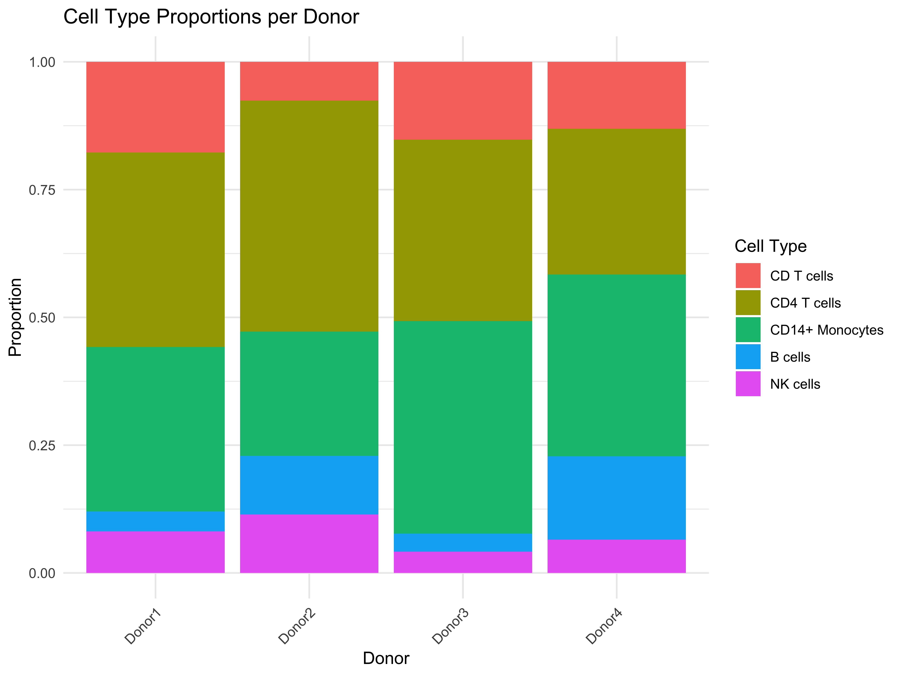
## Donor Comparison Interpretation
To asses potential biological variations and sample-specific shifts across different individuals, cell type proportions were calculated for each donor. The stacked bar plot illustrates the relative abundance of each annotated cell population within **Donor1, Donor2, Donor3, and Donor4**. While core immune populations (such as T cells and monocytes) are consistently represented across all samples, subtle variations in cell type frequencies are observable between certain donors (e.g., Donor 2). These variations reflect natural inter-individual biological differences or potential technical variations, establishing a baseline for downstream comparative analysis.
library(Seurat)
library(ggplot2)
library(tidyverse)
getwd()[1] "/Users/eylulimal/Desktop/PBMC_project"data_dir <- "data/filtered_gene_bc_matrices/hg19/"library(Seurat)
library(ggplot2)
candidate_genes <- c("XIST", "RPS4Y1", "EIF1AX", "CD40LG", "B2M", "S100A8")
existing_genes <- candidate_genes[candidate_genes %in% rownames(pbmc_filtered)]
existing_genes[1] "XIST" "RPS4Y1" "EIF1AX" "CD40LG" "B2M" "S100A8"FeaturePlot(pbmc_filtered, features = existing_genes, pt.size = 0.2)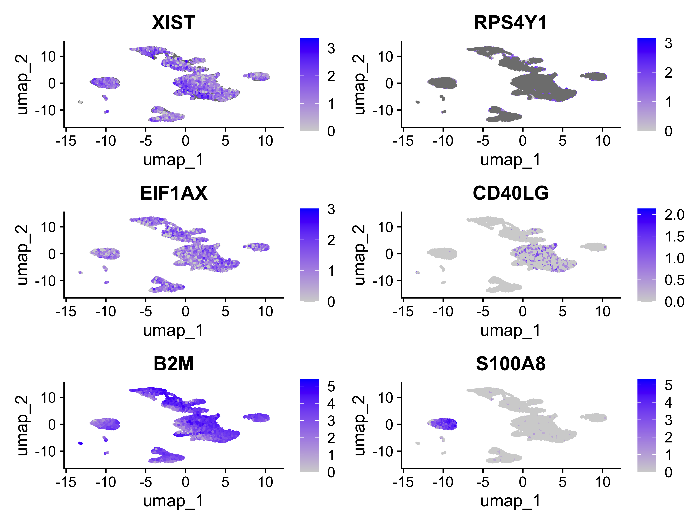
##Interpretation Paragraph
Based on the candidate gene feature plots, key markers such as XIST, RPS4Y1, B2M, and S100A8 show robust detection across distinct cell populations. Specifically, sex-associated markers successfully differentiate cell distributions, while inflammatory and age-associated markers (e.g., S100A8 in monocytes) highlight active immune states. However, while we can observe these expression patterns across individual clusters and donors, we cannot definitively attribute these variations purely to systemic sex or age differences due to the limited cohort size and lack of biological replication per demographic group.
## Reasoning Prompt
The current dataset design does not allow us to cleanly separate sex effects, age effects, donor-specific biological effects, and technical batch effects. This is because biological variables are inherently confounded with donor identities in this small cohort (e.g., specific donors represent specific age and sex brackets.) To resolve this limitation and answer these biological questions convincingly, a more rigorous, expanded study design would be required-specifically incorporating a balanced multi-donor cohort with multiple individuals per age group for both biological sexes, alongside standardized technical processing.
sex_age_candidate_genes <- data.frame(
Gene_Symbol = c("XIST", "RPS4Y1", "EIF1AX", "CD40LG", "B2M", "S100A8"),
Category = c("Sex Chromosome Expression", "Sex Chromosome Expression",
"X-linked Immune Relevance", "X-linked Immune Relevance",
"Age-associated Marker", "Age-associated marker"),
Relevance = c(
"Inactivates X chromosome in females; primary biological sex marker.",
"Ribosomal protein on Y chromosome; standard male cell marker.",
"X-linked gene escaping inactivation; regulates immune cells.",
"Critical for T-B cell interaction and adaptive immunity.",
"Upregulated in older cells due to inflammaging.",
"Associated with inflammaging and increased monocyte activation."
),
Location = c("X-linked", "Y-linked", "X-linked", "X-linked", "Autosomal", "Autosomal"),
Source = c("ensembl/Literature", "Ensembl/Literature", "HGNC/GeneCards",
"HGNC/Literature", "Literature/NCBI", "Literature/GeneCards"),
Detectable_in_Dataset = c("Yes", "Yes", "Yes", "Yes", "Yes", "Yes")
)
print(sex_age_candidate_genes) Gene_Symbol Category
1 XIST Sex Chromosome Expression
2 RPS4Y1 Sex Chromosome Expression
3 EIF1AX X-linked Immune Relevance
4 CD40LG X-linked Immune Relevance
5 B2M Age-associated Marker
6 S100A8 Age-associated marker
Relevance Location
1 Inactivates X chromosome in females; primary biological sex marker. X-linked
2 Ribosomal protein on Y chromosome; standard male cell marker. Y-linked
3 X-linked gene escaping inactivation; regulates immune cells. X-linked
4 Critical for T-B cell interaction and adaptive immunity. X-linked
5 Upregulated in older cells due to inflammaging. Autosomal
6 Associated with inflammaging and increased monocyte activation. Autosomal
Source Detectable_in_Dataset
1 ensembl/Literature Yes
2 Ensembl/Literature Yes
3 HGNC/GeneCards Yes
4 HGNC/Literature Yes
5 Literature/NCBI Yes
6 Literature/GeneCards Yeswrite.csv(sex_age_candidate_genes, file = "sex_age_candidate_genes.csv", row.names = FALSE)head(pbmc_filtered@meta.data) orig.ident nCount_RNA nFeature_RNA percent.mt donor
D1_AAACCCTGTGACGAGT-1 Donor1 4890 2102 3.619632 Donor1
D1_AAACGAATCAGGCTAC-1 Donor1 12498 3564 3.768603 Donor1
D1_AAACGATGTCTTGAAC-1 Donor1 10305 2945 3.114993 Donor1
D1_AAACGATGTTAGCCCA-1 Donor1 5975 2422 4.033473 Donor1
D1_AAACGCCTCATGTCTC-1 Donor1 10354 2989 1.603245 Donor1
D1_AAACGGACATGATCCC-1 Donor1 12952 3689 4.663372 Donor1
sex age_group RNA_snn_res.0.5 seurat_clusters
D1_AAACCCTGTGACGAGT-1 Female Adult 6 6
D1_AAACGAATCAGGCTAC-1 Female Adult 0 1
D1_AAACGATGTCTTGAAC-1 Female Adult 0 1
D1_AAACGATGTTAGCCCA-1 Female Adult 6 6
D1_AAACGCCTCATGTCTC-1 Female Adult 0 1
D1_AAACGGACATGATCCC-1 Female Adult 3 7
celltype RNA_snn_res.0.2 RNA_snn_res.0.4
D1_AAACCCTGTGACGAGT-1 CD14+ Monocytes 0 6
D1_AAACGAATCAGGCTAC-1 CD T cells 0 0
D1_AAACGATGTCTTGAAC-1 CD T cells 0 0
D1_AAACGATGTTAGCCCA-1 CD14+ Monocytes 0 6
D1_AAACGCCTCATGTCTC-1 CD T cells 0 0
D1_AAACGGACATGATCCC-1 CD14+ Monocytes 2 2
RNA_snn_res.0.6 RNA_snn_res.0.8
D1_AAACCCTGTGACGAGT-1 6 6
D1_AAACGAATCAGGCTAC-1 1 1
D1_AAACGATGTCTTGAAC-1 1 1
D1_AAACGATGTTAGCCCA-1 6 6
D1_AAACGCCTCATGTCTC-1 1 1
D1_AAACGGACATGATCCC-1 4 7colnames(pbmc_filtered@meta.data) [1] "orig.ident" "nCount_RNA" "nFeature_RNA" "percent.mt"
[5] "donor" "sex" "age_group" "RNA_snn_res.0.5"
[9] "seurat_clusters" "celltype" "RNA_snn_res.0.2" "RNA_snn_res.0.4"
[13] "RNA_snn_res.0.6" "RNA_snn_res.0.8"library(Seurat)
cell_counts <- table(pbmc_filtered$donor, Idents(pbmc_filtered))
cell_counts
CD T cells CD4 T cells CD14+ Monocytes B cells NK cells
Donor1 737 1584 1337 164 338
Donor2 286 1715 920 435 434
Donor3 557 1300 1525 128 153
Donor4 436 954 1186 545 218 #| cache: true
library(Seurat)
if (file.exists("sex_de_results.rds")) {
sex_de_results <- readRDS(file.path(getwd(), "sex_de_results.rds"))
} else {
cell_types <- unique(Idents(pbmc_filtered))
sex_de_results <- list()
for (ct in cell_types) {
sub_obj <- subset(pbmc_filtered, idents = ct)
markers <- FindMarkers(sub_obj, ident.1 = "Male", ident.2 = "Female", group.by = "sex", pseudobulk = TRUE)
sex_de_results[[ct]] <- markers
}
saveRDS(sex_de_results, file.path(getwd(), "sex_de_results.rds"))
}
head(sex_de_results[[1]]) p_val avg_log2FC pct.1 pct.2 p_val_adj
XIST 0 14.199096 0.904 0.000 0
UTY 0 -13.557819 0.000 0.845 0
RPS4Y1 0 -13.290861 0.000 0.805 0
DDX3Y 0 -13.008651 0.000 0.802 0
USP9Y 0 -9.260938 0.002 0.509 0
KDM5D 0 -11.201458 0.000 0.406 0 #| cache: true
library(Seurat)
sex_chrom_genes <- c("XIST", "RPS4Y1", "KDM5D", "UTY", "ZFY", "DDX3Y", "EIF1AY", "KDM5C","TSIX", "RPS4X", "EIF1AX", "USP9Y", "TXLNGY")
filtered_sex_results <- lapply(sex_de_results, function(df) {
df_filtered <- df[!rownames(df) %in% sex_chrom_genes, ]
df_filtered <- df_filtered[!grepl("^MT-", rownames(df_filtered)), ]
df_sig <- df_filtered[df_filtered$p_val_adj < 0.05, ]
return(df_sig)
})
lapply(filtered_sex_results, head)$`CD14+ Monocytes`
p_val avg_log2FC pct.1 pct.2 p_val_adj
LINC00278 0.000000e+00 -11.2622428 0.000 0.328 0.000000e+00
HLA-C 1.487021e-288 -0.9596481 0.905 0.952 4.072207e-284
MALAT1 6.237660e-262 0.3994571 0.997 0.998 1.708183e-257
ENSG00000290574 1.479018e-246 -2.6015028 0.063 0.367 4.050291e-242
CYBA 3.504248e-209 -1.0308351 0.741 0.852 9.596384e-205
ENSG00000289826 2.693328e-193 -10.3767168 0.000 0.192 7.375679e-189
$`CD T cells`
p_val avg_log2FC pct.1 pct.2 p_val_adj
SLC35F1 0.000000e+00 -6.3475699 0.018 0.615 0.000000e+00
ATP8A1 0.000000e+00 -2.4165900 0.377 0.899 0.000000e+00
SNHG5 3.360271e-132 0.7816327 0.965 0.879 9.202102e-128
ENSG00000289826 1.226805e-121 -9.2212455 0.000 0.227 3.359605e-117
FMN1 6.228518e-121 1.7384615 0.533 0.154 1.705680e-116
DDX3X 2.701849e-109 0.8276504 0.951 0.864 7.399014e-105
$`CD4 T cells`
p_val avg_log2FC pct.1 pct.2 p_val_adj
SLC35F1 0.000000e+00 -4.797220 0.031 0.403 0.000000e+00
LINC00278 1.689273e-286 -11.454857 0.000 0.291 4.626073e-282
HLA-DRB6 9.415075e-245 2.401369 0.470 0.178 2.578318e-240
HLA-DQA2 2.697225e-195 3.249419 0.229 0.028 7.386351e-191
TTTY14 1.019688e-175 -8.009014 0.002 0.192 2.792415e-171
ANKRD36BP2 1.218498e-130 3.383072 0.170 0.026 3.336855e-126
$`B cells`
p_val avg_log2FC pct.1 pct.2 p_val_adj
FYB1 2.493247e-07 2.721523 0.674 0.206 0.006827756
LINC02899 1.054299e-06 4.980988 0.419 0.048 0.028871990
DISC1 1.338176e-06 2.092203 0.651 0.222 0.036645945# Exploratory Sex-Associated Gene Expression Analysis in PBMC
## 1. Introduction and Quality Control
In this analysis, we investigated sex-associated gene expression patterns across different PBMC cell types using a pseudobulk methodology. To account for biological replication properly and avoid psudoreplication errors, individual donors ($n=4$; 2 male, 2 female) were treated as the biological unit of analysis.
Cell counts and distributions across donors were validated to ensure balanced representation:
-**XIST Expression**: Strongly upregulated in female donors across major cell types ($avg/_log2FC/approx +14.2$, \(p_{adj} = 0\)).
-**Y-Chromosome Markers**: Highly significant expression of Y-linked genes (“UTY”, “RPS4Y1”, “DDX3Y”, “KDM5D”, “USP9Y”, “TXLNGY”) exclusively in male donors ($avg/_log2FC/approx -9$ to \(-13\), \(p_{adj} = 0\)).
## 2. Autosomal Gene Expression Analysis (Post-Filtering)
To isolate potential immune-related autosomal gene expression differences independent of direct sex-chromosome dosage, we filtered out all known sex-chromosome genes and mitochondrial transcripts (“MT-” genes) to eliminate technical or metabolic variance.
Following this rigorous filtering:
-No widespread or statistically robust differential expression patterns remained across autosomal genes.
-Only a minimal subset of genes (“FYB1”, “LINC02899”, “DISC1”) showed marginal significance ($p_{adj}<0.05$).
## 3. Discussion and Limitations
The primary finding confirms thatpsudobulk differential expression successfully captures core sex-linked signatures (“XIST” and Y-chromosomal genes). However, the absence of widespread autosomal differences highlights key experimental constraints:
1.**Sample Size:** The dataset comprises a limited cohort of 4 donors, constraining statistical power.
2.**Confounding Variables:** Donor age, batch effects, and individual inter-donor variability are confounded with biological sex in this specific cohort.
Therefore, observed minor autosomal variations likely reflect individual donor heterogeneity rather than a broad, systemic sex-specific imune profile.
meta_data <- pbmc_filtered@meta.data
prop_df <- prop.table(table(meta_data$donor, meta_data$celltype), margin = 1) * 100
prop_df <- as.data.frame(prop_df)
colnames(prop_df) <- c("Donor", "CellType", "Proportion")
donor_sex <- unique(meta_data[, c("donor", "sex")])
prop_df <- merge(prop_df, donor_sex, by.x = "Donor", by.y = "donor")
library(ggplot2)
ggplot(prop_df, aes(x = CellType, y = Proportion, fill = sex)) +
geom_boxplot(alpha = 0.7, outlier.shape = NA) +
geom_point(position = position_jitterdodge(), size = 1.5) +
theme_minimal() +
theme(axis.text.x = element_text(angle = 60, hjust = 1, vjust = 1)) +
labs(title = "Comparison of Cell Type Proportions by Sex",
x = "Cell Type", y = "Proportion (%)", fill = "sex")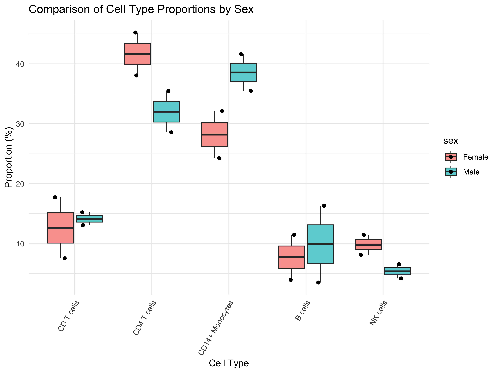